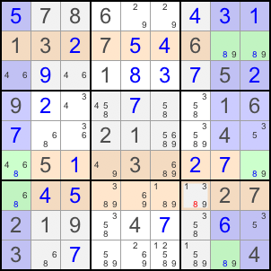

| Back to Course Catalog |
|
Finned Swordfish |
|
Finned Swordfish is a Swordfish with a fin, and you can remove the candidates which are both visible to the fin and Swordfish. To understand the fin, please see Finned X-Wing. Let's look at the following example:  Column 1, 8, 9 would form a Swordfish for candidate 8, if R9C8 is not 8. Thus, either Column 1, 8, 9 is a Swordfish, or R9C8 is 8. In either case, R7C7 cannot be 8. |
| Back to Course Catalog |